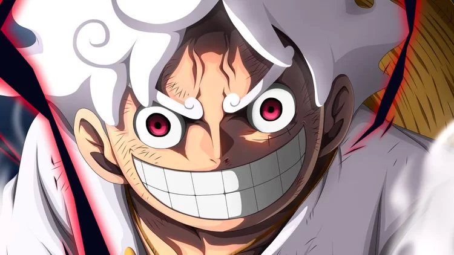
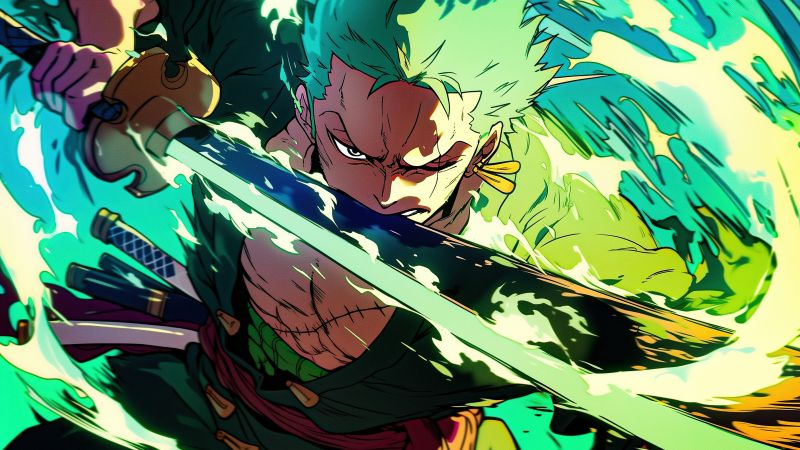
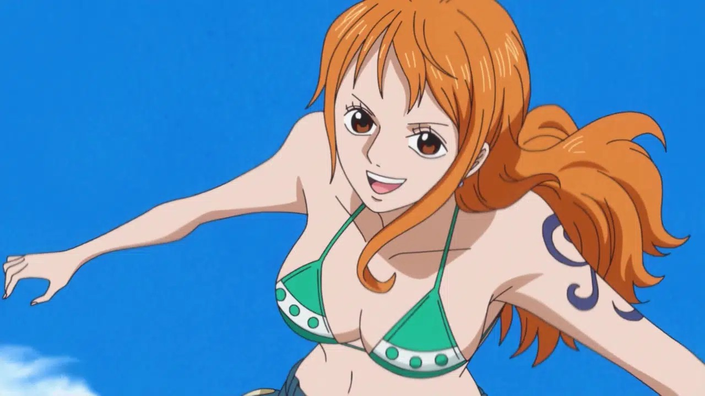
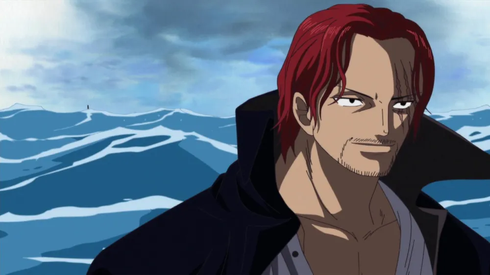
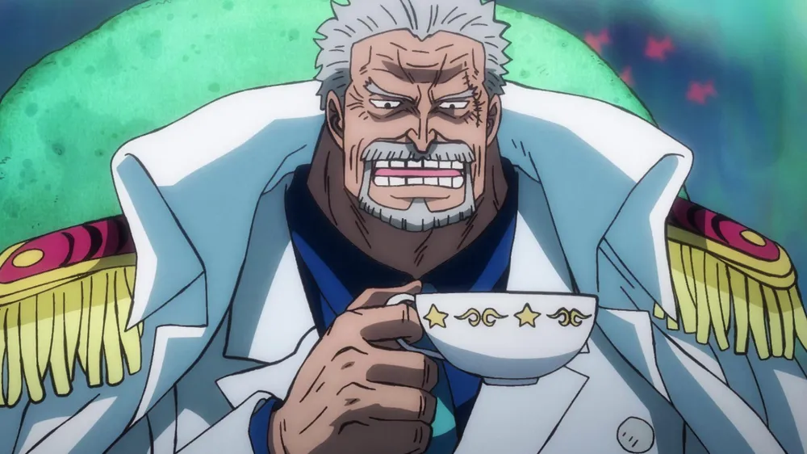

Top 5 personagens mais famosos do animeOne Piece
A longeva animação tem um vasto número de personagens que passaram pela saga e marcaram o publico; saiba quais são os principais nomes e seus dubladores no Brasil

Embarque em uma jornada com One Piece. A épica série de anime criada pelo renomado Eiichiro Oda é um fenômeno, cativando corações de fãs de várias gerações ao longo de seus 25 anos de existência. Esta aventura em alto-mar é repleta de amizades inabaláveis, batalhas pela liberdade e a incessante busca pelos sonhos. Junte-se a Monkey D. Luffy e sua tripulação de piratas enquanto eles descobrem o verdadeiro significado de poder e justiça nesta grande era dos piratas.

Monkey D. Luffy
O protagonista da série é um garoto cujo sonho é liderar uma equipe de piratas e ser o capitão mais influente dos mares. Sua maior habilidade é esticar a própria pele, um recurso adquirido após o herói comer a fruta do diabo Gomu Gomu no Mi. Tal poder lhe garante maior força, golpes poderosos, resistência e um artifício ideal para fazer piadas com o próprio corpo. Luffy é capitão e fundador dos Piratas do Chapéu de Palha, uma tripulação formada por 11 tripulantes com habilidades únicas, cujo nome vem do acessório inseparável do capitão. Sua maior ambição é conquistar o tesouro de Gol D. Roger, popularmente conhecido como "One Piece". O pirata que obter a relíquia conseguirá o título de Rei dos Piratas. Como o anime passou por dois estúdios de dublagem (DPN Santos e Unidub), Luffy foi dublado por Vagner Fagundes e Carol Valença.
Roronoa Zoro
Espadachim e primeiro integrante oficial dos Piratas do Chapéu de Palha. Seu passado como um ex-caçador de recompensas está marcado pelo seu corpo, repleto de cicatrizes de antigas batalhas. Zoro possui a ambição de ser o melhor espadachim do mundo, meta que ele treina bastante para obter. Junto com Luffy, Sanji e Jinbe, é um dos maiores lutadores da tripulação, e também bastante leal a Luffy. Dublado por Marcelo Campos e Glauco Marques.
Nami
A jovem foi a terceira integrante oficial do Piratas do Chapéu de Palha. Na infância, perdeu os pais numa guerra e foi criada por uma oficial da Marinha chamada Bell-mère. No primeiro episódio do programa, Nami já se identifica como uma ladra que gosta de roubar piratas. Por conta desse tipo de comportamento, seu relacionamento inicial com Luffy não é dos melhores, após ela ter roubado o jovem pirata.
A situação fica melhor entre os dois quando há uma rebelião contra Arlong, um tubarão antropomórfico que matou a mãe adotiva da jovem, e jura vingança a todo custo contra o vilão. Dublada por Samira Fernandes, Tatiane Keplmair e Luiza Porto.
Shanks
Ruivo e com marca de arranhões bem em um dos olhos, Shanks passa uma imagem que é misto de admiração e respeito. O pirata é a fonte de inspiração para Luffy seguir no ramo da pirataria marítima. O capitão conheceu Shanks quando ainda era criança, e viu o personagem sacrificar seu próprio braço para salvar o protagonista. Possui seu próprio grupo chamado Piratas Ruivos. Dublado por Silvio Giraldi.
Monkey D. Garp
D. Garp é o pai biológico de Luffy e adotivo de Portgas. O vice-almirante é extremamente poderoso e considerado um herói de guerra após a batalha de God Valley, uma ilha no mundo de One Piece que sumiu sem deixar rastros. Seu poder não está apoiado em nenhuma fruta diabo, mas, sim, na habilidade de concentrar sua energia espiritual (chamada de Haki no universo do anime). Dublado por Luiz Carlos de Moraes.
